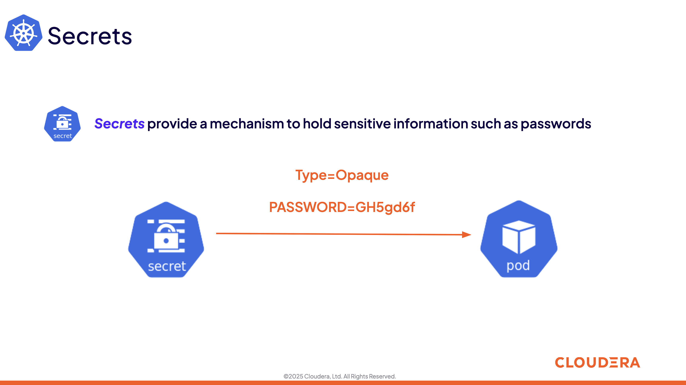
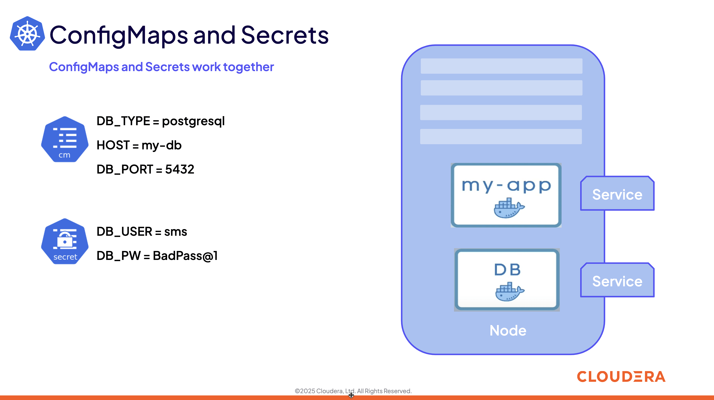
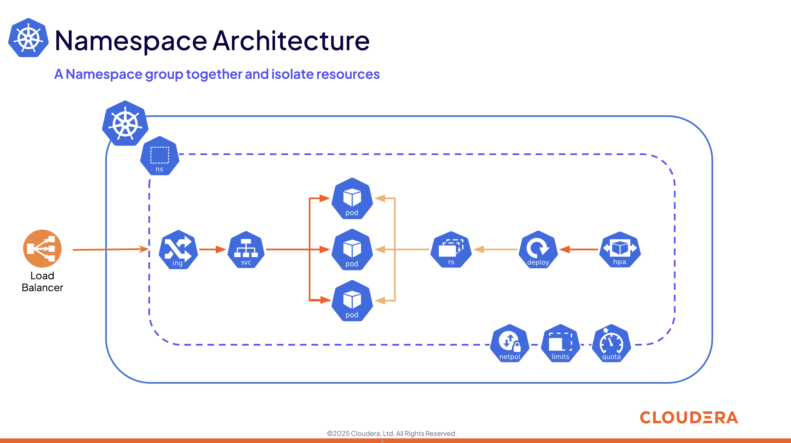
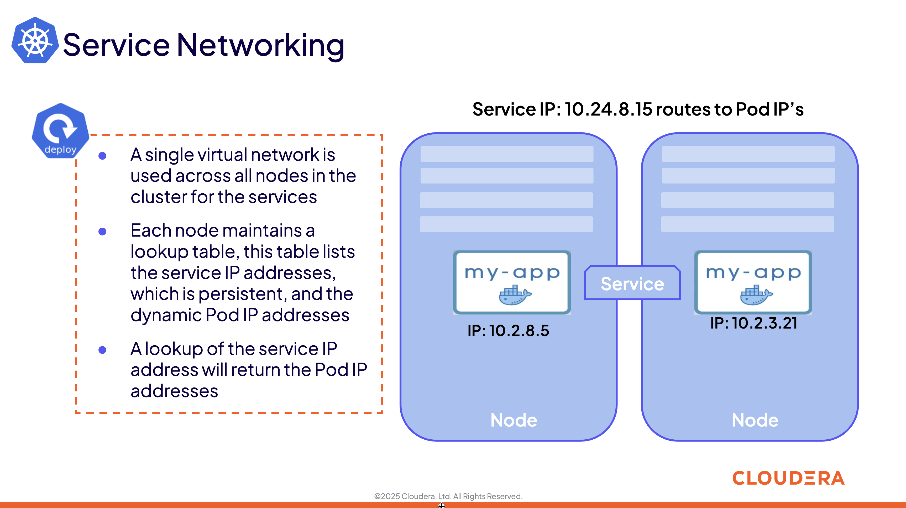
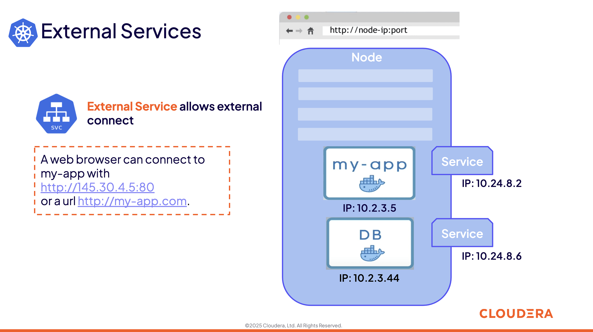
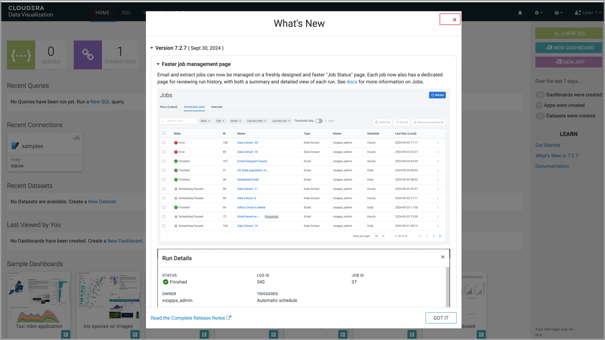

End to end alphaa vantage stocks
1. End to end alphaa vantage stocks
In this exercise, we will work get stock data from Alpha Vantage, that offers free stock APIs in JSON and CSV formats for real-time and historical stock market data.
- Data ingestion and streaming — provided by Cloudera Data Flow (CDF) and Cloudera Data Engineering (CDE).
- Global data access and persistence—provided by Cloudera Data Warehouse (CDW).
- Data visualization with CDP Data Visualization.
2. High-Level Steps
Below are the high-level steps for what we will be doing in the workshop.
(1) Get Alpha Vantage key to be used in Cloudera Data Flow (CDF) to collect stock data (IBM, AMZN, MSFT, GOOGL).
(2) Create CDF workflow and run it to ingest data into S3.
(3) Create Iceberg Table using Cloudera Data Warehouse (CDW/Hue).
(4) Create CDE job and run it to ingest data into iceberg table.
(5) Use Cloudera Data Viz to create a simple dashboard on Iceberg table.
(6) Run the CDE job with updated ticker (NVDA).
(7) Use/Test Iceberg time travel features.
{kind=link}
3. Pre-requisites
- Laptop with a supported OS (Windows 7 not supported) or MacBook.
- A modern browser - Google Chrome (IE, Firefox, Safari not supported).
- Wi-Fi Internet connection.
- Git installed (optional).
4. Download the exercise files
4.1 Use any unzip utility to download extract the content of the e2e-cdp-alphavantage.zip file.
In the extracted content just be sure that the downloaded files has a file Stocks_Intraday_Alpha_Template.json which should be around ~65 KB in size. You will need this file in later step.

5. Get Alpha Vantage Key
Go to website
https://www.alphavantage.co/
Choose link -> GET FREE API KEY .
{kind=link}
5.1 Fill the details:
- Choose
Studentfor the question -Which of the following best describes you?. - Enter your own organisation name for the question -
Organization (e.g. company, university, etc.): - Enter your email address for the question -
Email:(Note: Please enter personal email id and not the workshop email id) - Click on
GET FREE API KEY.
5.2 You should see a message like - Welcome to Alpha Vantage! Your dedicated access key is: YXXXXXXXXXXXXXXE.
Please record this API key at a safe place for future data access. 
{kind=link}
6. Define Workload Password
You will need to define your workload password that will be used to acess non-SSO interfaces. You may read more about it: Non-SSO interfaces.
https://docs.cloudera.com/management-console/cloud/user-management/topics/mc-access-paths-to-cdp.html
Click on your user name (Ex: user1) at the lower left corner.
Click on the Profile option.

6.1 Click option Set Workload Password.
Enter a Password and Confirm Password. (Use the credentials provided by your instructor to log in to Cloudera on cloud console.)
Click button Set Workload Password. 
{kind=link}
6.2
{kind=link}
6.3 Check that you got the message - Workload password is currently set or alternatively, look for a message next to Workload Password which says (Workload password is currently set)
{kind=link}
7. Create the flow to ingest stock data via API to Object Storage
Click on Home option on top left corner to go to the landing page. 
{kind=link}
8. Click on DataFlow icon as shown in the image below.

9. Create a new CDF Catalog
1. On the left menu click on the option -> Catalog.
2. On the top right corner click the button -> Import Flow Definition.
{kind=link}
10. Fill up those parameters :
Flow Name
(user)-stock-data
Depending upon your user name it should be something like - user1-stock-data
Nifi Flow Configuration
*Upload the file Stocks_Intraday_Alpha_Template.json
(Note: You had downloaded this file in Step 4.1 or Step 4.2 depending on what you chose initially.).*
Click Import 
{kind=link}
11. The new catalog has been added. Type in the name so that you can only see the one that you had created and not the others. For example - user1-stock-data
Now let's deploy it.

12. Deploy DataFlow
Click on the small arrow towards right of the catalog you just created.
Click on Deploy button.

13. You will need to select your environment
Click on Continue →

14. Give a name to this dataflow.
(user)_stock_dataflow
Depending on your user name it should be something like - user1_stock_dataflow.
Make sure that the right Target Environment is selected. Click Next. 
{kind=link}
15. Click Next.

16. Update parameter as below
- CDP_Password
Fill up your CDP workload password here
2.CDP_User
your user
Depending on your user name it should be something like - admin1.
(Make sure you are not adding any white spaces after CDP_User and Password)
3.S3 Path
stocks
4.api_alpha_key
your Alpha Vantage key
- stock_list
IBM
GOOGL
AMZN
MSFT
{kind=link}
17. Nifi Node Sizing : Extra Small
Enable Auto scaling and let the min nodes be 1 and max nodes be 3.

18. You can define KPI's in regards what has been specified in your dataflow, but we will skip this for now. Click Next→

19. Click Deploy to launch the deployment.
{kind=link}
20. The deployment will get initiated. Check the deployment on the run and look for the status Good Health.

21.

22. Dataflow is up and running and you can confirm the same by looking at the green tick and message Good Health against the dataflow name. It’s will take ~7 minutes before you see the green tick. Notice the Event History and there are approximately 8 steps that happen after the flow deployment. You might want to observe those.
{kind=link}
23.
{kind=link}
24. After the successful deployment we will start receiving stock information into our bucket. If you want you can check in your bucket under the path s3a:///user/(username)/stocks/new.

25. you can verify the s3 buck bucket by running below command
Make sure to replace the storage location and username from the below command.
Copy below command to your notepad and make necessary changes
hdfs dfs -ls s3a://cdp-storage-sanket-500-class-240801/user/admin_1_240801/stocks/new
hdfs dfs -ls s3a://<storage location>/user/<username>/stocks/new
Follow the next step to get the storage location
26. Get storage location
Go to the Management console > Select environment
{kind=link}
27. Click on Summary tab & scroll down
{kind=link}
28. Copy storage location and add it to below command
Make sure replace the username as well
hdfs dfs -ls s3a://cdp-storage-sanket-500-class-240801/user/admin_1_240801/stocks/new
.
hdfs dfs -ls s3a://<storage location>/user/<username>/stocks/new

29. Login to Datahub cluster
Click on Datahub cluster > select your Datahub training-gateway > select Nodes tab > Copy the public IP of the node.
{kind=link}
30.

31. Login to Nodes
Run below "ssh" command to login to this node
User your username and PublicIP which you copied in your previous step & Enter your Password
ssh username@PublicIP
.
eg. ssh admin_1_240801@18.142.188.180
{kind=link}
32. Verify files in s3 bucket
Run the hdfs command which you have modified in the previous step
hdfs dfs -ls s3a://<storage location>/user/<username>/stocks/new
After running above command you can see we are receiving stock information into our bucket.
{kind=link}
33. View Nifi DataFlow
Click on blue arrow on the right of your deployed dataflow user1_stock_dataflow.
{kind=link}
34. Select Actions → View in NiFi on top right corner.
{kind=link}
35. Double click on the Process group.
{kind=link}
36. You can see the Nifi data flow that has been deployed from the json file. You can click each of the processor groups to go inside and see the flow details. Make sure that there are no errors in the flow. If you see any please let the instructor know
{kind=link}
37. At this stage you can suspend this dataflow, go back to Actions > Manage deployment>Deployment Manager -> Actions -> Stop flow. We will add a new stock later and restart it.
{kind=link}
38. Stop flow
{kind=link}
39.
{kind=link}
40. Confirm that the status is Stopped.
{kind=link}
41. Create Iceberg Table
Now we are going to create the Iceberg table. Click on Home option on top left corner to go to the landing page.
{kind=link}
42. From the CDP Portal or CDP Menu choose Data Warehouse.
{kind=link}
43. From the CDW Overview window, click the "HUE" button on the right corner as shown under the Virtual Warehouses to the right.
{kind=link}
44. Now you’re accessing to the sql editor called - "HUE" (Hadoop User Experience).
Make sure that the Impala engine is selected to interact with the database.

45. Create database using your login For example: wuser00. Replace user_id by your username for database creation in the command below.
CREATE DATABASE ${user_id}_stocks;
See the result to notice a message Database has been created.

46. After creating the database create an Iceberg table. Replace user_id by your username for iceberg table creation in the HUE browser similar to previous step.
CREATE TABLE IF NOT EXISTS ${user_id}_stocks.stock_intraday_1min (
interv STRING,
output_size STRING,
time_zone STRING,
open DECIMAL(8,4),
high DECIMAL(8,4),
low DECIMAL(8,4),
close DECIMAL(8,4),
volume BIGINT)
PARTITIONED BY (
ticker STRING,
last_refreshed string,
refreshed_at string)
STORED AS iceberg;
See the result to notice a message Table has been created.
Let’s now create our engineering process.
{kind=link}
47. Process and Ingest Iceberg using CDE
Now we will use Cloudera Data Engineering to check the files in the object storage that were populated as a part of the above DataFlow run and then compare if it's new data, and insert them into the Iceberg table.
48. Click on Home option on top left corner to go to the landing page.
{kind=link}
49. From the CDP Portal or CDP Menu choose Data Engineering.
{kind=link}
50. Let’s create a job. Click on Jobs
Then click Create Job button in the right side of the screen.
Note: This page may differ a little bit depending on the fact that some user may have created a job prior to you or not.
{kind=link}
51. Fill the following values carefully.
Job Type*
Choose Spark 3.2.3
Name*
Replace (user) with your username. For example: user1-StockIceberg.
(user)-StockIceberg
Make sure Application File that is selected is resource. Select the option Upload
Select stockdata-job -> stockdatabase_2.12-1.0.jar
{kind=link}
52.
Main Class
com.cloudera.cde.stocks.StockProcessIceberg
.
.Make sure the below arguments are filled so that (user) is replaced with the actual username. For example wuser00_stocks and instead of (user) at the end it is wuser00. Make sure to check the next screenshot to comply.
Arguments
(user)_stocks
s3a://meta-workshop/ (Storage account see the step 28
stocks
{kind=link}
53. Click the Create and Run button at the bottom. (There is no screenshot for the same). Note: It might take ~3 minutes. So, it’s okay to wait until it’s done.
This application will:
- Check new files in the new directory;
- Create a temp table in Spark/cache this table and identify duplicated rows (in case that NiFi loaded the same data again);
- MERGE INTO the final table, INSERT new data or UPDATE if exists;
- Archive files in the bucket;
{kind=link}
54. After execution, the processed files will be in your bucket but under the name which has the format - processed"+date/.
{kind=link}
55. Checking Logs of CDE Job Run
{kind=link}
56. Click on the Run Id.
{kind=link}
57. Click the Logs and go through the stdout to understand better.
Under Logs tab check for the following. In most of the cases Processing temp dirs indicates that job would run successfully and is in it's last stages.
{kind=link}
58. (optional) You can aslo verify that using below hdfs command
hdfs dfs -ls s3a://cdp-storage-sanket-500-class-240801/user/admin_1_240801/stocks/
{kind=link}
59. Create Dashboard using CDP DataViz
Note: Before moving ahead with this section make sure that the CDE job ran successfully. Go to Job Runs option in the left pane and look for the job that you ran now. It should have a green tick box next to it's name.
We will now create a simple dashboard using Cloudera Data Viz.
{kind=link}
60. Click on Home option on top left corner to go to the landing page.
{kind=link}
61. From the CDP Portal or CDP Menu choose Data Warehouse.
{kind=link}
62. Then click on the Data Visualization option in the left window pane. You’ll see an option Data VIZ next to the data-viz application with the name dataviz. It should open a new window.+
{kind=link}
63. You will access to the following window.
Click close 
{kind=link}
64. Choose DATA on the upper menu bar next to the options of HOME, SQL, VISUALS.
{kind=link}
65. Fill the below deatils.
-
Connection type: CDW Impala
-
Connection name: Userx-DataViz
-
CDW Warehouse: Select from the drop-down
Hostname or IP address: Gets automatically selected.
Port: Gets automatically filled up.
Username: Gets automatically filled up.
Password: Blank
- Click on Test.
Once the connection is verified.
{kind=link}
66. You will see your connection in the All connections list
Select your connection(userx-dataviz) then click on NEW DATASET
{kind=link}
67. Replace (user) with your username wherever it is applicable.
Dataset title
(user)_dataset
Dataset Source
From Table
Select Database
(user)_stocks
Select Table
stock_intraday_1min
{kind=link}
68. Select "New Dashboard" -> icon next to the Table that you created just now.
{kind=link}
69. You’ll land in the following page.

70. Let’s drag from DATA section on the right under Dashboard Designer the following attribute/metric. And the REFRESH THE VISUAL
Dimensions -> ticker
Move it to Visuals -> Dimensions
Measures -> #volume
Move it to Visuals -> Measures
{kind=link}
71. Then on VISUALS choose Packed Bubbles.
Click on Refresh Visual.
Your visual could be slighltly different from the image here.
{kind=link}
72. Make it PUBLIC by changing the option from PRIVATE to PUBLIC. Save it by clicking the SAVE button on the top.
You have succeeded to create a simple dashboard. Now, let’s query our data and explore the time-travel and snapshot capabilties of Iceberg.
{kind=link}
73. Query Iceberg Tables in Hue and Cloudera Data Visualization
Our example will load the intraday stock daily since the free API does not give real-time data, but we can change the Cloudera Dataflow Parameter to add one more ticker and we've scheduled to run hourly the CDE process. After this we will be able to see the new ticker information in the dashboard and also perform time travel using Iceberg!
74. Logging into Hue
From the CDW Overview window, click the "HUE" button on the right corner as shown under the Virtual Warehouses to the right. Make sure that the correct Virtual Warehouse is selected.
{kind=link}
75. Now you’re accessing to the sql editor called "HUE". Make sure that you can see Impala.

76. Iceberg snapshots
Let's see the Iceberg table history. Replace user_id with your username. For example: wuser00.
DESCRIBE HISTORY ${user_id}_stocks.stock_intraday_1min;
{kind=link}
77. Copy the snapshot id to your notepad
{kind=link}
78. Copy and paste the snapshot_id and use it on the following impala queries. Replace user_id with your username. For example: wuser00.
SELECT ticker, count(*)
FROM ${user_id}_stocks.stock_intraday_1min
FOR SYSTEM_VERSION AS OF ${snapshot_id}
GROUP BY ticker;
{kind=link}
79. Add a New stock (NVDA)
We shall load new data and this time we will include additional stock ticker - NVDA. Go to CDF, and find the data flow that you had created earlier. It should be in stopped state if you had stopped it towards the end of
Step 5: Create the flow to ingest stock data via API to Object Storage section of the workshop.

80. Go to Cloudera Data Flow option and look for the flow that you had created earlier based on your user name. Ex - wuser00_stock_dataflow.
{kind=link}
81. Click on the arrow towards the right side of the flow and then click on Actions → Manage Deployment.
{kind=link}
82. Click on parameter
{kind=link}
83. Click on the Parameters tab and then scroll down to the text box where you had entered stock tickers (stock_list).
{kind=link}
84. Add the stock NVDA. And then click on Apply Changes.
{kind=link}
85.
{kind=link}
86. Now, start the flow again by clicking Actions and then Start flow.

87.
{kind=link}
88.
{kind=link}
89. The S3 bucket gets updated with new data and this time it includes the new ticker NVDA as well. We will see it. You can see the same in S3 bucket as shown here.
{kind=link}
90.
{kind=link}
91. You can verify the same by running hdfs command similar to previous step
Ask your instructor to verify or you can verify the same.
Modify the below commands as per your username and storage.
hdfs dfs -ls s3a://cdp-storage-sanket-500-class-240801/user/admin_1_240801/stocks/
{kind=link}
92.
{kind=link}
93. Now go to Cloudera Data Engineering from the home page and Jobs. Choose the CDE Job that you had created earlier with your username.
{kind=link}
94.
{kind=link}
95. Click the 3 dots next to your job that you had created earloer and then click on Run Now.
{kind=link}
96. Click on Job Runs in the left to see the status of the job that was initiated now. It should succeed.
{kind=link}
97. As CDF has ingested a new stock value and then CDE has merged those value it has created new Iceberg snapshots.
{kind=link}
98. Check new snapshot history
Now let check again the snapshot history by going to Hue.
DESCRIBE HISTORY ${user_id}_stocks.stock_intraday_1min;
Copy the snapshot id.

99. Paste the new snapshot_id and use it on the following impala query.
SELECT ticker, count(*)
FROM ${user_id}_stocks.stock_intraday_1min
FOR SYSTEM_VERSION AS OF ${new_snapshot_id}
GROUP BY ticker;
Now, we can see that this snapshot retrieves the count value for stock NVDA that has been added in the CDF stock_list parameter.
{kind=link}
100. Show Data Files
Replace user_id with your username. For example: wuser00.
.
show files in ${user_id}_stocks.stock_intraday_1min;
{kind=link}
101. Check the Iceberg table. Replace user_id with your username. For example: wuser00.
describe formatted ${user_id}_stocks.stock_intraday_1min;

{kind=link}
{kind=link}
{kind=link}
{kind=link}
{kind=link}